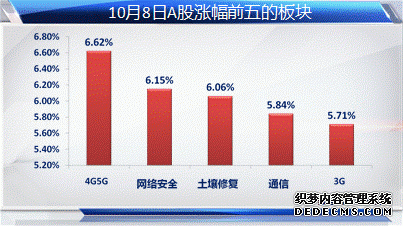
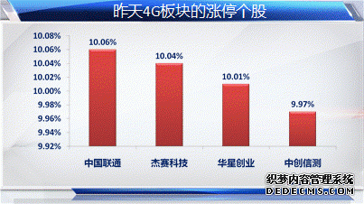
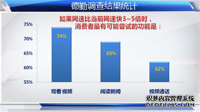

10月8日，国家发改委网站发布《国家发展改革委办公厅关于组织实施2013年移动互联网及第四代移动通信产业化专项的通知》。明确提出支持基于TD-LTE的第四代移动通信的产业化。
大4G概念炒作有望贯穿四季度
昨天的开门红行情中，4G概念股本身就是两市涨幅第一的板块，盘后发改委的这条新闻，是不是将继续为该板块的炒作火上浇油，从而带动整个信息消费板块走强，继7月份之后再来一次高潮？
大同证券投资顾问付永翀认为，四季度，通信行业将面临移动转售牌照发放，4G牌照发放以及4G商用试点扩大等事件刺激，这些事件将吸引二级市场资金对4G板块的反复关注与炒作。而发改委的通知，不仅提到了4G，还涉及可穿戴等概念，也使得以4G为核心的炒作获得跟更多炒作筹码。
移动互联需要重点把握
在市场需求方面，德勤在昨天发布的“2013德勤中国移动终端消费者行为调查”中也称，中国中国4G市场的需求极为迫切，较早推出4G的运营商会有巨大回报;而消费者最期待4G的视频功能。德勤还预计，移动终端广告是未来三年最有效率的广告市场之一。这份调查可以为投资者带来什么样的启示？
大同证券投资顾问付永翀认为，在4G商用全面铺开之后，根据德勤的报告，消费者最有可能尝试的功能比例最高的是，观看视频；可以预期，视频内容提供商和平台搭建商将最容易受益，其次，是相应的内容和应用提供商也会受益。



| Copyright © 2007-2016 移动互联网专业委员会
版权所有 未经许可网站内容禁止复制、转载，任何人不得擅自使用 |